Excalibur
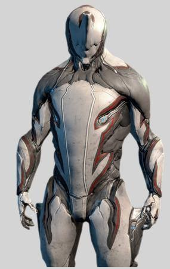
角色簡介
心智者取得了勝利。他們將我們的武器，科技反過來對付我們。我們的成果越先進，輸的就越凄慘。戰爭已宣告结束，除非我們能找到新的出路。在绝望之際我们轉向了虛空。這令人目眩的夜晚，我們的科學與推理在這片虛無地獄中全然失效。 我們接收了從那里歸來稀少而扭曲的生物。在他們的身上鑄造了外裝甲，提供宣泄苦痛的管道，給予他們古老形式的武器，槍械與刀具。一種全新的戰士，新的法則誕生了。這些被遺棄者，這些Tenno，成為了們的救世主。這些宛如神一般的戰士，對我們的敵人以他們前所未見的方式施予鋼鐵及狂怒般的打擊。
這就是Excalibur，槍與劍大師。
無論你是什么樣的風格，Tenno，Excalibur 戰甲是個令人敬畏的选選擇。
Excalibur是一款以劍為主題的戰甲。在其所揮舞的劍刃的幫助下，他能快速斬殺敵人。這款戰甲是玩家一開始遊戲就能選擇的三款戰甲之一。
推薦原因:
在一般的清怪或者需要跑圖的任務中,十分頭疼在處理目標或移動時候所遇到的小怪,他擁有控制技可以致盲敵方,使得戰甲有自保的能力,再加上技能的高輸出,以及均衡的能力值,讓他在殲滅敵人的方面十分的有效率,可以使得任務進行得更圓滑
ps:由於幾次改版和更新,影片中介紹的戰甲部件獲得地方有所變更
適合關卡:
捕獲,殲滅,生存,破壞.....等,這些需要長距離移動的破壞任務
獲得途徑:
1.一開始選擇
2.火星刺殺任務獲得
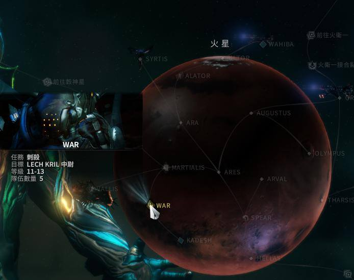
詳細資訊:
Excalibur
Mag
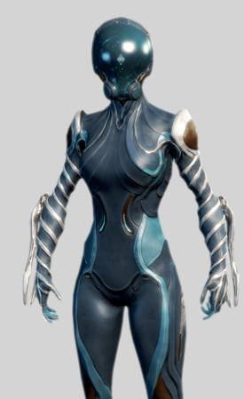
角色簡介
Mag專門駕馭周圍的磁場能量，把敵軍玩弄于鼓掌之間。
這就是Mag，一個不可忽視的力量。
Mag是個具有團隊精神的角色，Tenno，值得加入任何陣容。
Mag是一款運用磁力戰鬥的戰甲。她的護盾容量比較突出，不過也因此犧牲了生命值，並且能量上限也很一般。她的技能有著良好的控場效果。她是玩家一開始就能選擇的三款戰甲之一。
推薦原因:
一開始玩的時候,偶爾總是遇到高血或者高護甲的怪或王,因此可以靠著他的能力,可以使得有厚重護甲或護盾的敵人變成可以比較輕鬆對付的對手,使得敵人不再那麼的難纏,尤其在遊戲前期,他的四技除了少數幾種兵,大多數的兵都可以直接解決,在加上他的被動,可以使得玩家不用冒著危險去特意撿東西又可以獲得掉落物
ps:由於幾次改版和更新,影片中介紹的戰甲部件獲得地方有所變更
適合關卡:
刺殺,殲滅,生存
獲得途徑:
1.一開始選擇
2.火衛一刺殺任務獲得
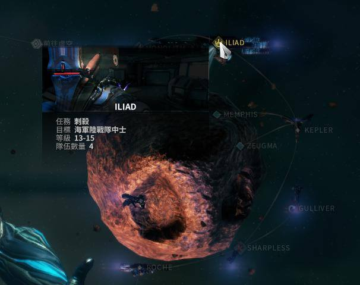
詳細資訊:
Mag
Frost
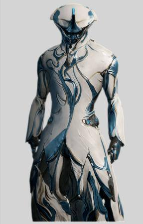
角色簡介
藉由引導周围的水分與蒸汽，Frost能在絕對零度的環境下建立堅不可破的防禦和致命的冰霜攻擊。
這就是Frost，比周圍空間本身更冷且更加致命。
Frost既可保護隊友又可懲戒敵人，取決於你的選擇。
Frost是一個行動緩慢並且具有厚重護甲的戰甲。他能使用攻擊或防御性技能，並為其自身和團隊帶來戰鬥優勢。他控制的暴風雪能打擊和冰封敵人，同時也能缓解其他隊友的負擔。
推薦原因:
對新手來說要守護一個目標或者長時間生存的時候,總是無法拿捏何時換彈何時該移動等時機,而他主要是防禦型的戰甲,雖然機動性偏低,但擁有較高的護甲以及護盾值,這戰甲有個特色就是技能每個不是帶著緩速要不就是凍結,對於控場十分有用,三技可以使得眾人有個可以安全攻擊敵人的立足點,使得玩家不管是在防守目標或者生存都可以有一個喘口氣以及降低被傷害的機率
ps:由於幾次改版和更新,影片中介紹的戰甲部件獲得地方有所變更
適合關卡:
移動防禦,防禦,挖掘,攔截,生存......等,需要打長久戰的關卡
獲得途徑:
穀神星刺殺
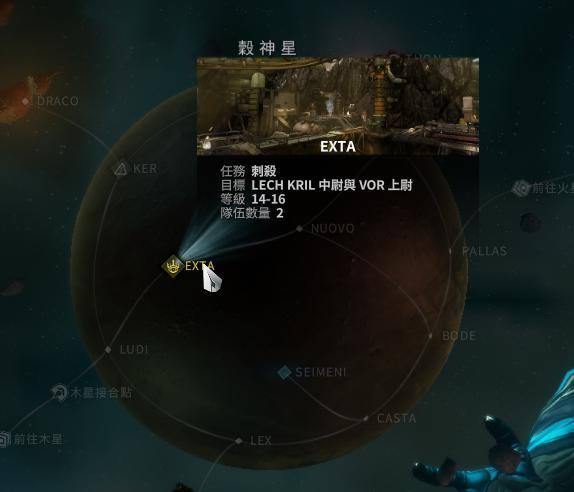
詳細資訊:
Frost
Loki
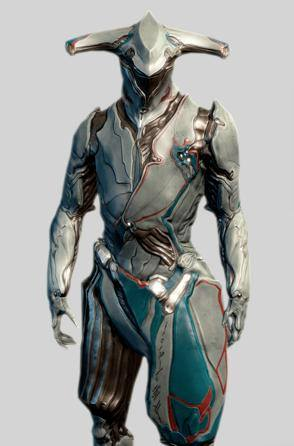
角色簡介
Loki適合老手玩家。雖然缺乏直接損害能力，但Loki擁有各種各樣的獨特的工具来擾亂戰場。高手使用的Loki是一股不容輕視的力量。
這就是Loki，無賴與欺騙者
無論你願意獨自作戰還是組對戰鬥，Tenno，Loki都將以任何形式融入其中。
Loki是脆弱但控場能力強的戰甲。他幾乎沒有直接造成傷害的能力。他的能力的作用主要集中在分散敵方注意、混淆視聽、搞破壞、位移和偷襲。
推薦原因:
這是隻可以隱形的角色,相信大家都知道在這遊戲中有的時候都希望有一隻可以隱形的角色可以不用一直跟敵人糾纏,在加上他比起一般戰甲還要塊的移動速度,以及他可以使得敵人繳械(無法使用槍械),使得他在技術方面的關卡十分的有利
ps:由於幾次改版和更新,影片中介紹的戰甲部件獲得地方有所變更
適合關卡:
捕獲,破壞,清巢,救援,間諜,刺殺.....等,需要技術的任務
獲得途徑:
海王星刺殺
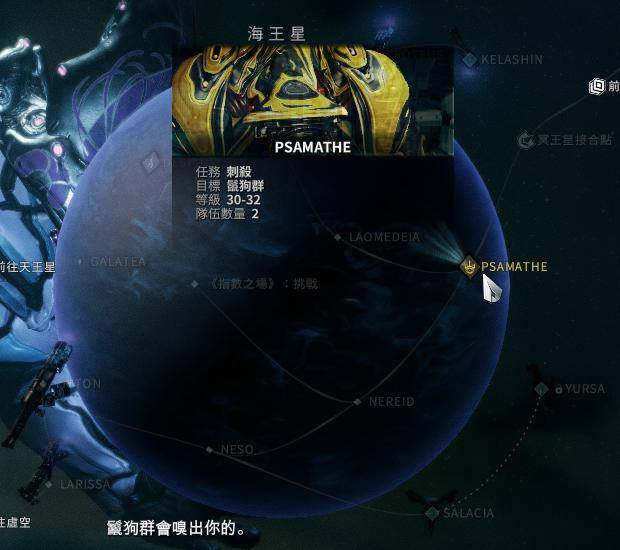
詳細資訊:
Loki
Rhino
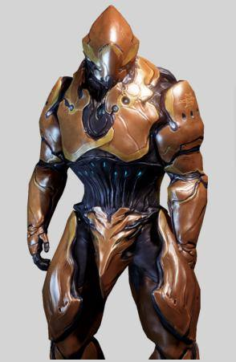
角色簡介
Rhino是最重型的戰甲，既有進攻能力，又有防御能力。
這是Rhino，一種無可動摇且極具韌性的力量。
Rhino既可獨自生存，又可成為隊伍中的基石；這取決於你，Tenno。
Rhino是一個重型的Warframe裝甲，其實力就如同他的名字一般。Rhino的移動速度缓慢，但如坦克般的特色卻彌平了這點，有效的運用能力加入戰局，適時地吸收敵方傷害给予伙伴強化甚至是使用踐踏來扭轉戰局。
推薦原因:
這隻是大家新手時最常用的戰甲,就算到後面也有很多人使用,雖然跑速遊點慢,但他的技能組合使你不管是喜歡一個人還是組隊玩都可以,他不但可以加攻擊和防禦,還可以控敵,是一隻屬於坦克型的萬用角
ps:由於幾次改版和更新,影片中介紹的戰甲部件獲得地方有所變更
適合關卡:
幾乎所有關卡都可以也都有人使用,是目前最廣泛使用的戰甲之一,除了需要機動性以及需要隱蔽性的關卡以外,幾乎是萬用甲
獲得途徑:
金星刺殺
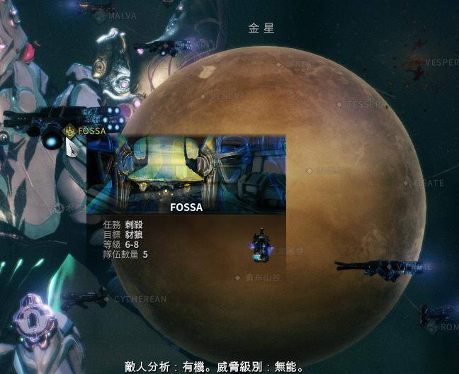
詳細資訊:
Rhino
Oberon
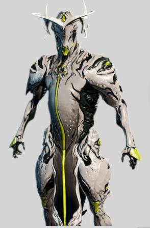
角色簡介
既能治療同伴又能打擊敵人的戰甲，Oberon是Tenno所倡導的平衡的象徵。
這就是Oberon，神秘的，肆意的。
Oberon是一个嫻熟和光榮的戰士，Tenno。你是嗎？
Oberon是戰甲中的聖騎士。狂熱的攻擊能力和神聖的保護既能使他成為了一個兼具攻擊和支援能力的平衡型角色。Oberon在11.5更新中首次出现.
推薦原因:
這是一隻可以說是打著打著就湊出一隻來的戰甲,但可別小看他,他的技能可以控敵和製造血球,這對面對突然襲來的大批敵人的你,製造出可以有緩口氣的機會,而且到了後期拿到集團卡(遊戲中的六大集團)後更可以有機率使人直接復活,讓大家可以不用暴露在拉人起來時被攻擊的風險中
ps:由於幾次改版和更新,影片中介紹的戰甲部件獲得地方有所變更
適合關卡:
防禦,挖掘,移動防禦,生存,救援,劫持.....等,幾乎是廣泛的關卡都蠻適合使用的戰甲
獲得途徑:
任意卓越者(卓越者:就是一般怪腳底下有光環,並且都帶有特殊能力)
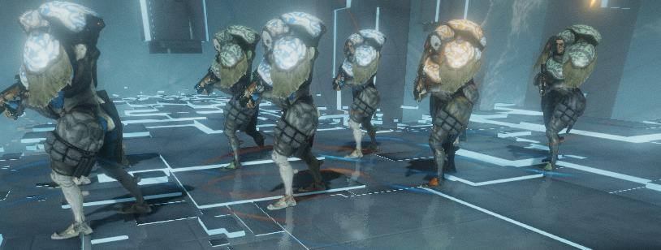
詳細資訊:
Oberon
Hydroid
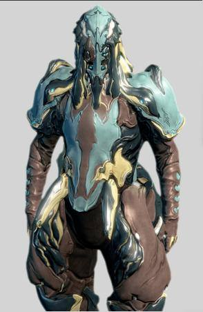
角色簡介
Hydroid從深海中崛起，能夠掌控水的力量來制造毁滅性效果。
這就是Hydriod，來自深海的致命的掠奪者。
無論是在深海中還是在星際間，Tenno。Hydriod 預先指揮著戰場。
Hydroid擁有操縱與變化成水的力量。運用這份力量，他可以水葬、水爆或是操縱水之觸手殲滅敵人。Hydroid的形象和技能能讓人聯想到海盗。其于更新13中首次亮相。
推薦原因:
雖然和frost一樣都是屬於防禦角,但是由於他缺少防禦性技能所以比起frost來說她無法比較推薦的防禦類型的戰甲,但是由於他的技能大多是都帶控制並且定點,所以適合需要長時間待著的生存,他在狹小的更能發揮他的性能
ps:由於幾次改版和更新,影片中介紹的戰甲部件獲得地方有所變更
適合關卡:
防禦,攔截,移動防禦,生存......等,長久戰
獲得途徑:
地球刺殺
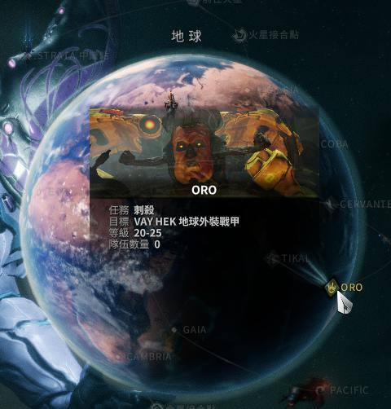
詳細資訊:
Hydroid
回到最上面